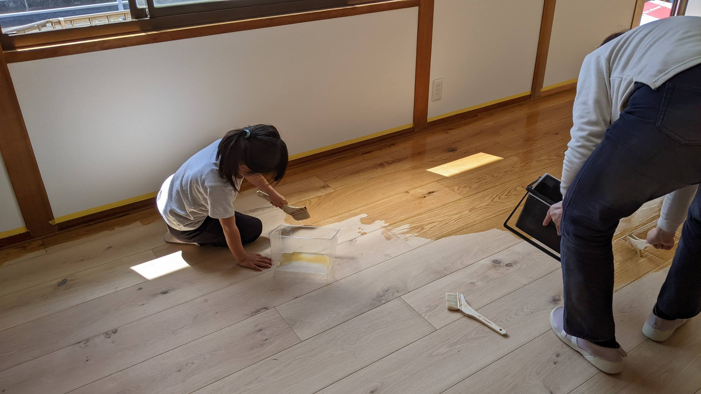

実績事例
ご家族の想いをカタチにした、リノベーションの軌跡をご紹介します。


うのベース: 「やりたい」が集い、地域に愛される共創の拠点
岡山県玉野市に位置するコワーキングスペース『うのベース』は、訪れる人々の「やりたい」という想いを応援し、新たな仕事や繋がりを生み出す、地域に深く根ざした拠点です。ちとせメタバースデザインもDIYディレクションで携わったこの空間は、利用者さんの手によって温かく作り上げられました。活発なワークショップや勉強会が日常的に開催され、フリーランスから学生まで、多様な人々が自然と交流し、刺激し合っています。サイトやInstagramからも伝わるように、まさに『利用者さんに愛されている』場所として、地域に活気をもたらすコミュニティスペースへと成長しました。
インタビュー記事を見る3Dウォークスルー体験（準備中）

片田様邸: 家族で作り上げた、温もりと愛着あふれる住空間
片田様邸では、ご家族皆様でリノベーションに取り組みました。旦那様が電気工事を担当され、頼りになるお父様は大工工事と水道工事を。そして、ご家族みんなで漆喰塗りを体験されました。慣れない作業に汗を流しながらも、お互いに協力し、声を掛け合いながら進めるDIYは、単なる家の改修以上の価値を生み出しました。この共同作業を通じて、家族の絆はより一層深まり、完成した住まいには、家族みんなで作り上げたからこその温もりと愛着が満ち溢れています。
詳細を見る3Dウォークスルー体験（準備中）